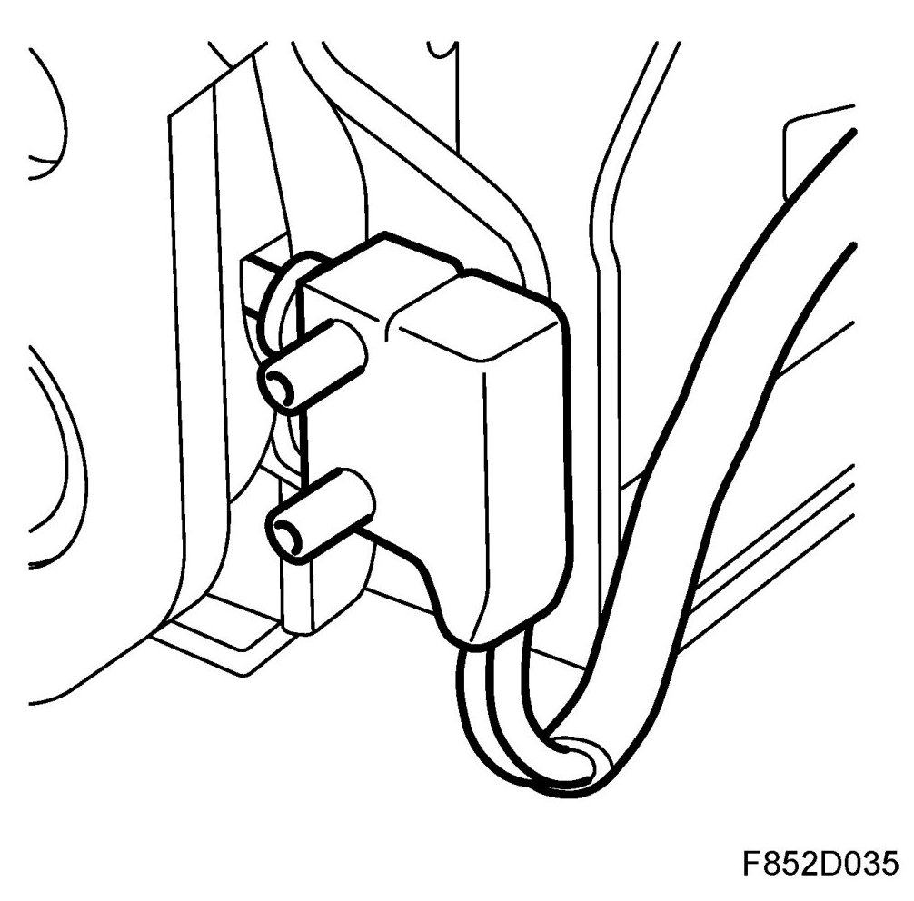
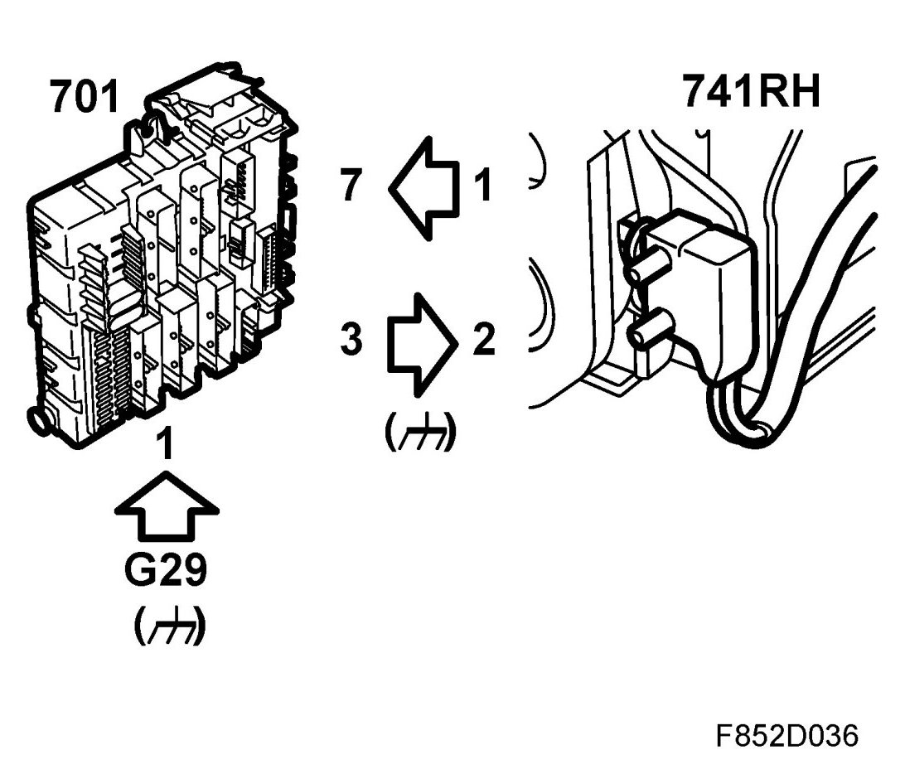
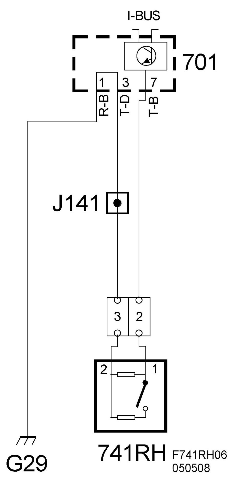

Microswitch, Backrest Locked In Upright Position, Rear Seat Right (741RH)
Microswitch, Backrest Locked In Upright Position, Rear Seat Right (741RH)
Location
Microswitch, backrest locked in upright position, rear seat right (741RH).
Main task
The microswitch is used to determine whether the rear seat backrest is locked.

Type
The switch contains a bipolar switch and two parallel resistors. Only one resistor is connected in series to ground when the switch is open (backrest unlocked) while both are connected in parallel to ground when the switch is closed (backrest locked).
Connect
Microswitch pin 2 is grounded through REC pin 3. The input from the sensor is connected to a circuit with B+ supply through a 1 kohm resistor. The circuit is grounded internally through a 3 kohm resistor, whereby the voltage applied on pin 8 to the microswitch will be 10V.


This means that the voltage to the A/D converter provides information as to whether the switch is open/closed and whether there is a short or open circuit. The voltage measured on pin 7 will be 4.2 V when the switch is closed and approx. 6.3 V when open. Other values will be interpreted as a faulty circuit. The voltage from the sensor is converted into a digital signal.